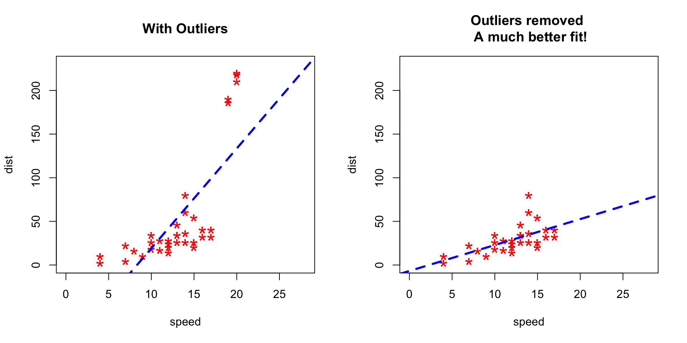
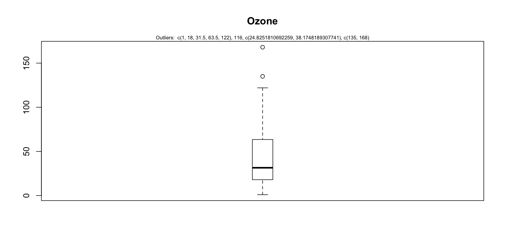
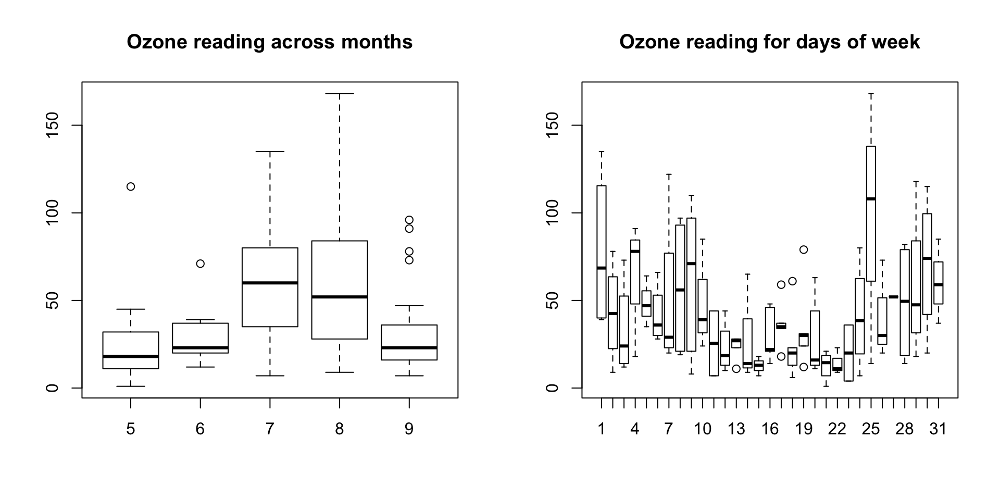
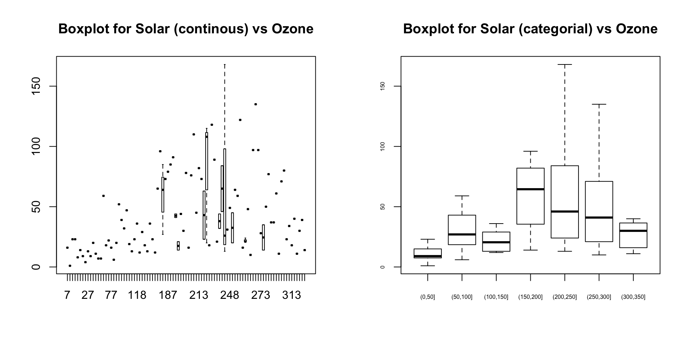
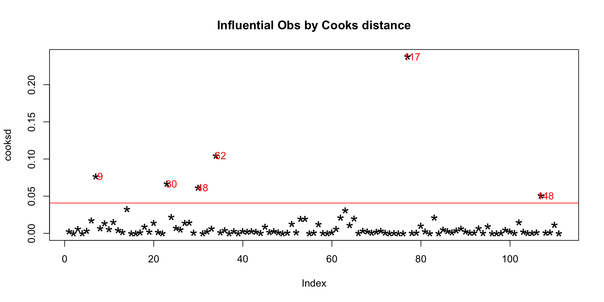

Download the script here. There are no exercises so this script contains all necessary code already.
Because, it can drastically bias/change the fit estimates and predictions. Let me illustrate this using the cars dataset.
To better understand the implications of outliers better, I am going to compare the fit of a simple linear regression model on cars dataset with and without outliers. In order to distinguish the effect clearly, I manually introduce extreme values to the original cars dataset. Then, I predict on both the datasets.
rm(list=ls())
# Inject outliers into data.
cars1 <- cars[1:30, ] # original data
cars_outliers <- data.frame(speed=c(19,19,20,20,20), dist=c(190, 186, 210, 220, 218)) # introduce outliers.
cars2 <- rbind(cars1, cars_outliers) # data with outliers.# Plot of data with outliers.
par(mfrow=c(1, 2))
plot(cars2$speed, cars2$dist, xlim=c(0, 28), ylim=c(0, 230), main="With Outliers", xlab="speed", ylab="dist", pch="*", col="red", cex=2)
abline(lm(dist ~ speed, data=cars2), col="blue", lwd=3, lty=2)
# Plot of original data without outliers. Note the change in slope (angle) of best fit line.
plot(cars1$speed, cars1$dist, xlim=c(0, 28), ylim=c(0, 230), main="Outliers removed \n A much better fit!", xlab="speed", ylab="dist", pch="*", col="red", cex=2)
abline(lm(dist ~ speed, data=cars1), col="blue", lwd=3, lty=2)
Notice the change in slope of the best fit line after removing the outliers. Had we used the outliers to train the model(left chart), our predictions would be exagerated (high error) for larger values of speed because of the larger slope.
For a given continuous variable, outliers are those observations that lie outside 1.5 * IQR, where IQR, the ‘Inter Quartile Range’ is the difference between 75th and 25th quartiles. Look at the points outside the whiskers in below box plot.
par(mfrow=c(1, 1))
outlier_values <- boxplot.stats(airquality$Ozone) # outlier values.
boxplot(airquality$Ozone, main="Ozone", boxwex=0.1)
mtext(paste("Outliers: ", paste(outlier_values, collapse=", ")), cex=0.6)
Visualize in box-plot of the X and Y, for categorical X’s
par(mfrow=c(1, 2))
# For categorical variable
boxplot(Ozone ~ Month, data=airquality, main="Ozone reading across months") # clear pattern is noticeable.
boxplot(Ozone ~ Day, data=airquality, main="Ozone reading for days of week") # this may not be significant, as day of week variable is a subset of the month var.
What is the inference? The change in the level of boxes suggests that Month seem to have an impact in ozone_reading while Day_of_week does not. Any outliers in respective categorical level show up as dots outside the whiskers of the boxplot.
par(mfrow=c(1, 2))
# For continuous variable (convert to categorical if needed.)
boxplot(Ozone ~ Solar.R, data=airquality, main="Boxplot for Solar (continous) vs Ozone")
boxplot(Ozone ~ cut(Solar.R, pretty(airquality$Solar.R)), data=airquality, main="Boxplot for Solar (categorial) vs Ozone", cex.axis=0.5)
Cook’s distance is a measure computed with respect to a given regression model and therefore is impacted only by the X variables included in the model. But, what does cook’s distance mean? It computes the influence exerted by each data point (row) on the predicted outcome.
The cook’s distance for each observation i measures the change in Ŷ (fitted Y) for all observations with and without the presence of observation i, so we know how much the observation i impacted the fitted values.
##Cooks distance
mod <- lm(Ozone ~ ., data=airquality)
cooksd <- cooks.distance(mod)
plot(cooksd, pch="*", cex=2, main="Influential Obs by Cooks distance") # plot cook's distance
abline(h = 4*mean(cooksd, na.rm=T), col="red") # add cutoff line
text(x=1:length(cooksd)+1, y=cooksd, labels=ifelse(cooksd>4*mean(cooksd, na.rm=T),names(cooksd),""), col="red") # add labels